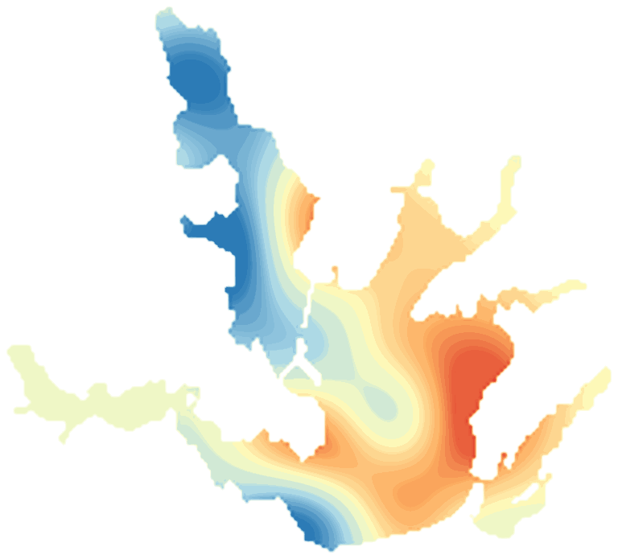

LakeScope › TX
Lewisville Lake today
Updated 2026-11-14 - Atlas Labs
Some algae possible, 67°F water, level steady, 3 ft below normal, windy Saturday (15 mph ESE).
Water level
517.74 ft
USGS gauge 08052800 - 2026-11-14
7-day trend: steady (-0.14 ft). Compared with normal for this date: -3.0 ft (same weeks, 2016-2025).
Water clarity and algae
Some algae possible Last clear view: a few days ago.
Surface temperature
67°F
seen from space on 2026-11-12

Weather, next 3 days
| Day | Sky | High / low | Wind | Rain |
|---|---|---|---|---|
| Saturday | Mostly Cloudy then Slight Chance Rain Showers | 61 / 45°F | 15 mph ESE | 19% |
| Sunday | Rain Showers | 52 / 45°F | 15 mph E | 100% |
| Monday | Mostly Cloudy | 56 / 46°F | 5 mph ENE | 1% |
Sunrise 06:58 - sunset 17:26 - Waxing crescent. National Weather Service.
Get the LakeScope app: alerts and the 3-D view of Lewisville Lake